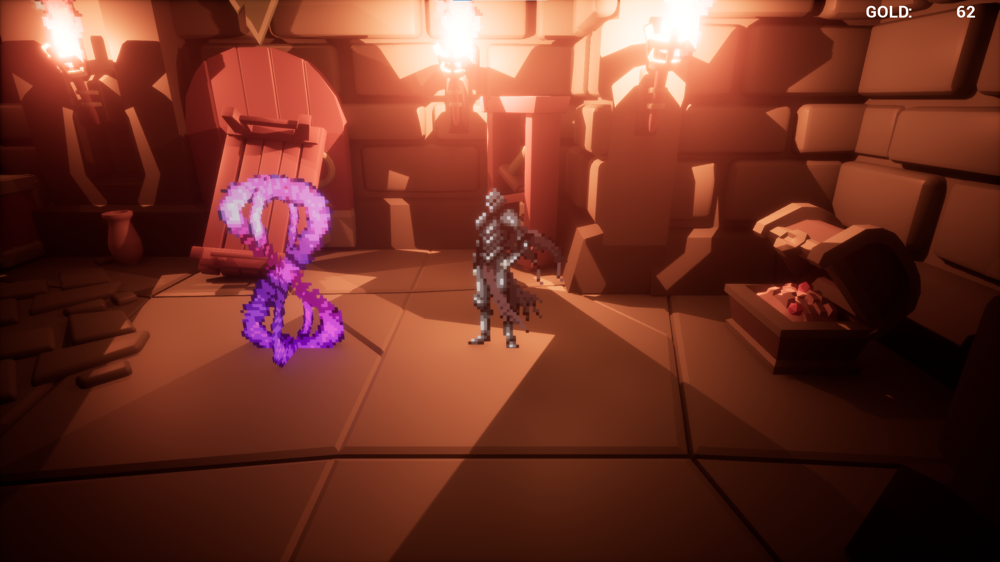
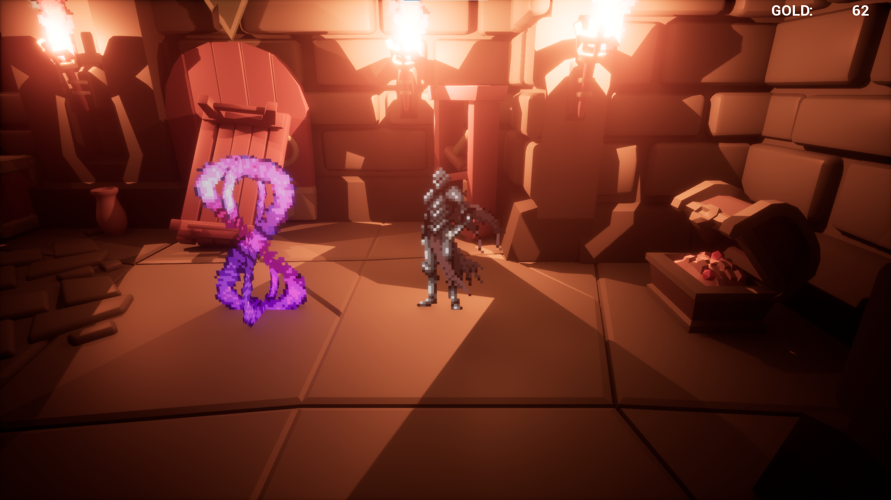

Projects
The Castle Cart


Context: "The Castle Cart" is a couch LAN racing game set in a fantasy world filled with classes and magic. The project aimed to blend fast-paced racing with class-based mechanics to create a unique multiplayer experience. The development involved a collaborative effort with my university peers over several months.
Development Process: We started by brainstorming game mechanics and settled on combining racing with RPG elements. I took the lead on developing the gameplay mechanics and designing the various classes and their unique spells. We iterated through multiple prototypes to balance the game and ensure each class felt distinct and enjoyable.
Lessons Learned: This project taught me a lot about team collaboration and project management. I enhanced my skills in Unity and C#, especially in synchronizing gameplay for couch co-op modes. I also gained valuable experience in game balance and class design.
Skills Utilized: Unity (Advanced), C# (Advanced), Game Design, Class Design, Teamwork.
View on GitHub Check out the itch.io page!Technologies used:
- Unity
- C#
Mushroom Survivors


Context: "Mushroom Survivors" is a unique take on the 'survivors' genre, where defeated enemies become your allies. The project was developed with a focus on innovative gameplay mechanics that encourage strategic play.
Development Process: In this project, I was responsible for designing and implementing the core gameplay mechanics. This involved programming enemy AI behaviors, the mechanics for converting enemies into allies, and designing challenging boss fights. The development process included extensive testing and balancing to ensure a smooth player experience.
Lessons Learned: This project enhanced my skills in AI programming and gameplay mechanics. I also learned a lot about game balancing and the importance of playtesting. Working under confidentiality agreements taught me the significance of professional conduct in collaborative projects.
Skills Utilized: Unity (Advanced), C# (Advanced), AI Programming, Game Design, Problem-solving.
Note: This project is currently confidential and in development.
Technologies used:
- Unity
- C#
UE DEMO

 


Context: "UE DEMO" is a solo project where I explored creating a 2.5D game using Unreal Engine 5. The goal was to integrate a 2D character into a 3D environment, experimenting with the blending of dimensions.
Development Process: I started by setting up the project in Unreal Engine 5, utilizing both C++ and Blueprints. I focused on character movement, interaction with the environment, and visual aesthetics. This project allowed me to delve deeper into Unreal's capabilities and improve my understanding of C++ in game development.
Lessons Learned: Working on this demo improved my proficiency with Unreal Engine and C++. I gained valuable experience in level design and learned how to effectively combine 2D and 3D assets. It also taught me about the challenges of solo development and the importance of time management.
Skills Utilized: Unreal Engine 5 (Intermediate), C++ (Intermediate), Level Design, Self-motivation.
View on GitHub Download UE DemoTechnologies used:
- Unreal Engine 5
- C++
- Blueprints